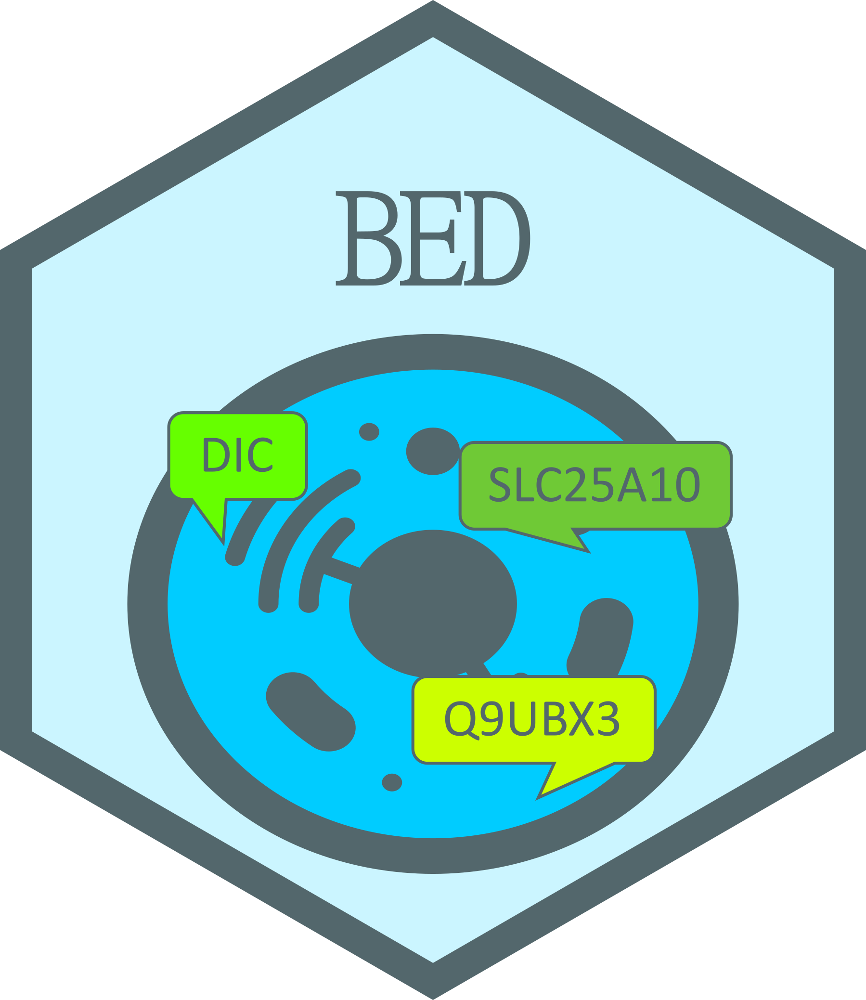

Biological Entity Dictionary 
An interface for the ‘Neo4j’ database providing mapping between different identifiers of biological entities. This Biological Entity Dictionary (BED) has been developed to address three main challenges. The first one is related to the completeness of identifier mappings. Indeed, direct mapping information provided by the different systems are not always complete and can be enriched by mappings provided by other resources. More interestingly, direct mappings not identified by any of these resources can be indirectly inferred by using mappings to a third reference. For example, many human Ensembl gene ID are not directly mapped to any Entrez gene ID but such mappings can be inferred using respective mappings to HGNC ID. The second challenge is related to the mapping of deprecated identifiers. Indeed, entity identifiers can change from one resource release to another. The identifier history is provided by some resources, such as Ensembl or the NCBI, but it is generally not used by mapping tools. The third challenge is related to the automation of the mapping process according to the relationships between the biological entities of interest. Indeed, mapping between gene and protein ID scopes should not be done the same way than between two scopes regarding gene ID. Also, converting identifiers from different organisms should be possible using gene orthologs information. The method has been published by Godard and van Eyll (2018) doi:10.12688/f1000research.13925.3.
Installation
From CRAN
install.packages("BED")Dependencies
The following R packages available on CRAN are required:
- neo2R: Neo4j to R
- visNetwork: Network Visualization using ‘vis.js’ Library
- dplyr: A Grammar of Data Manipulation
- readr: Read Rectangular Text Data
- stringr: Simple, Consistent Wrappers for Common String Operations
- utils: The R Utils Package
- shiny: Web Application Framework for R
- DT: A Wrapper of the JavaScript Library ‘DataTables’
- miniUI: Shiny UI Widgets for Small Screens
- rstudioapi: Safely Access the RStudio API
And those are suggested:
- knitr: A General-Purpose Package for Dynamic Report Generation in R
- rmarkdown: Dynamic Documents for R
- biomaRt: Interface to BioMart databases (i.e. Ensembl)
- GEOquery: Get data from NCBI Gene Expression Omnibus (GEO)
- base64enc: Tools for base64 encoding
- htmltools: Tools for HTML
- webshot2: Take Screenshots of Web Pages
- RCurl: General Network (HTTP/FTP/…) Client Interface for R
Installation from github
devtools::install_github("patzaw/BED")Possible issue when updating from releases <= 1.3.0
If you get an error like the following…
Error: package or namespace load failed for ‘BED’:
.onLoad failed in loadNamespace() for 'BED', details:
call: connections[[connection]][["cache"]]
error: subscript out of bounds… remove the BED folder located here:
file.exists(file.path(Sys.getenv("HOME"), "R", "BED"))Documentation
Documentation is provided in the BED vignette.
A public instance of the BED Neo4j database is provided for convenience and can be reached as follows:
library(BED)
connectToBed("https://genodesy.org/BED/", remember=TRUE, useCache=TRUE)
findBeids()Citing BED
This package and the underlying research has been published in this peer reviewed article:
Available BED database instance
An instance of the BED database (UCB-Human) has been built using the script provided in the BED R package.
This instance is focused on Homo sapiens, Mus musculus, Rattus norvegicus, Sus scrofa and Danio rerio organisms. It has been built from the following resources:
- Ensembl
- NCBI
- Uniprot
- biomaRt
- GEOquery
The Neo4j graph database is available as a dump file shared in Zenodo.
The following shell commands can be adapted according to user needs and called to get a running Neo4j container with a BED database instance.
#!/bin/sh
####################################################@
## Check folders ----
if test -e ~/.cache/BED/neo4jData; then
echo "~/.cache/BED/neo4jData directory exists ==> abort - Remove it before proceeding" >&2
exit
fi
mkdir -p ~/.cache/BED/neo4jData
if test -e ~/.cache/BED/neo4jDump; then
echo "~/.cache/BED/neo4jDump directory exists ==> abort - Remove it before proceeding" >&2
exit
fi
mkdir -p ~/.cache/BED/neo4jDump
####################################################@
## Download data ----
export BED_REP_URL=https://zenodo.org/records/14048653/files/
wget $BED_REP_URL/dump_bed_Genodesy-Human_2024.11.07.dump -O ~/.cache/BED/neo4jDump/neo4j.dump
####################################################@
## Import data ----
docker run --interactive --tty --rm \
--volume=~/.cache/BED/neo4jData/data:/data \
--volume=~/.cache/BED/neo4jDump:/backups \
neo4j:5.25.1 \
neo4j-admin database load neo4j --from-path=/backups
####################################################@
## Start neo4j ----
docker run -d \
--name bed_2024.11.07 \
--publish=5454:7474 \
--publish=5687:7687 \
--env=NEO4J_dbms_memory_heap_initial__size=4G \
--env=NEO4J_dbms_memory_heap_max__size=4G \
--env=NEO4J_dbms_memory_pagecache_size=4G \
--env=NEO4J_dbms_read__only=true \
--env=NEO4J_AUTH=none \
--volume ~/.cache/BED/neo4jData/data:/data \
--volume ~/.cache/BED/neo4jData/logs:/var/lib/neo4j/logs \
--restart=always \
neo4j:5.25.1Build a BED database instance
Building and feeding a BED database instance is achieved using scripts available in the “supp/Build” folder.
Docker notes
Sergio Espeso-Gil has reported stability issues with Docker images in Windows. It’s mainly solved by checking the “Use the WSL2 based engine” options in docker settings. More information is provided here: https://docs.docker.com/docker-for-windows/wsl/